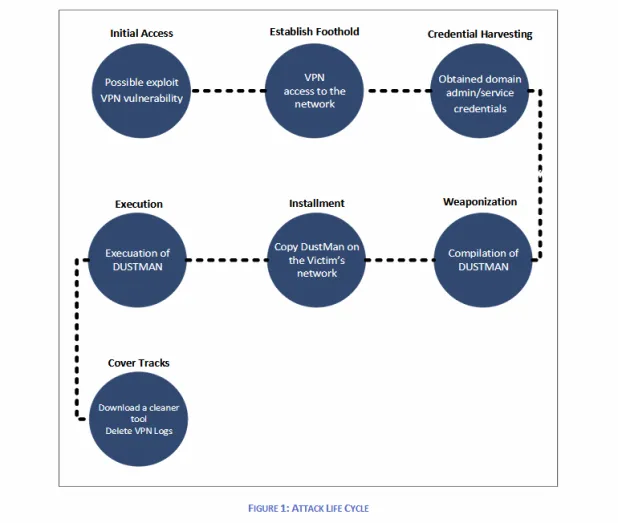
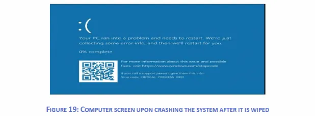

Iranian state-sponsored hackers have deployed a brand-new pressure of data-wiping malware at the community of Bapco, Bahrain’s nationwide oil corporate.The incident came about on December 29. The assault didn’t have the iconic impact hackers may have sought after, as just a portion of Bapco’s PC fleet was once impacted, with the corporate proceeding to perform after the malware’s detonation.
Bapco incident is the cyber-attack described in a safety alert printed final week by way of Saudi Arabia’s Nationwide Cybersecurity Authority. Saudi officers despatched the alert to native firms energetic at the power marketplace, in a try to warn of approaching assaults, and urging firms to safe their networks.The Bapco safety incident got here to mild amid emerging political tensions between the USA and Iran after the USA army killed a most sensible Iranian army common in a drone strike final week.
Despite the fact that the Bapco incident does not seem to be attached to the present US-Iranian political tensions, it does come to turn Iran’s complicated technical features in relation to launching harmful cyber-attacks — one thing about which the USA Division of Native land Safety had warned in an alert printed over the weekend.
The Dustman malware
On the center of the hot Bapco assault is a brand-new pressure of malware named Dustman. In line with research by way of Saudi Arabia’s cyber-security company, Dustman is a so-called information wiper — malware designed to delete information on inflamed computer systems, as soon as introduced into execution.
Dustman represents the 3rd other data-wiping malware related to the Tehran regime. Iranian state-backed hackers have an extended historical past of growing data-wiping malware.Iran’s foray into data-wiping malware is going again to 2012 after they advanced Shamoon (often referred to as Disttrack), a work of malware that was once chargeable for wiping greater than 32,000 PCs on the Saudi Aramco oil corporate in Saudi Arabia, in probably the most international’s maximum notorious cyber-attacks.
Two extra Shamoon variations have been found out within the following years, Shamoon v2 (utilized in 2016 and 2017) and Shamoon v3 (utilized in 2018 and 2019).
In line with a document printed by way of IBM X-Pressure, Iranian hackers also are related to data-wiping assaults with a 2d other malware pressure named ZeroCleare, first found out within the wild in September 2019.
In step with Saudi CNA officers, Dustman seems to be an upgraded and extra complicated model of the ZeroCleare wiper that was once found out final fall — which, in flip, had a couple of code similarities with the unique Shamoon.
The primary shared part between all 3 traces is EldoS RawDisk, a sound device toolkit for interacting with information, disks, and walls. The 3 malware traces use other exploits and methods to raise preliminary get admission to to admin-level, from the place they unpack and release the EldoS RawDisk software to wipe information on inflamed hosts.
Since Dustman is thought of as an advanced model of ZeroCleare, many of the code is identical, however Saudi CNA officers who analyzed the malware stated Dustman comes with two essential variations:
Dustman’s harmful capacity and all wanted drivers and loaders are delivered in a single executable report versus two information, as was once the case with ZeroCleare.
Dustman overwrites the quantity, whilst ZeroCleare wipes a quantity by way of overwriting it with rubbish information (0x55)
Bapco focused on
Bapco with Dustman suits within the common modus operandi of identified Iranian state-sponsored hackers.Traditionally, previous to the Dustman deployment on December 29, Iranian hackers used Shamoon and ZeroCleare solely in opposition to firms within the oil and fuel box.
Previous objectives incorporated firms with ties to the Saudi regime and Saudi Aramco, Saudi Arabia’s nationwide oil corporate. Iran and Saudi Arabia have had strained members of the family because the 1970s, because of variations within the interpretation of Islam, and as a result of their festival at the oil export marketplace.
Bapco is a corporation absolutely owned by way of the Bahrain regime, a rustic that has had strained political members of the family with the Tehran regime, and which is a identified trade spouse of Saudi Aramco.
How the assault came about, On the time of writing, Bapco seems to be the one sufferer of an assault with the Dustman malware, despite the fact that this does not imply the malware was once now not deployed at the community of different objectives.
In line with the CNA document, attackers do not appear to have deliberate to deploy Dustman on the time they did, however seem to have brought about the data-wiping procedure as a last-ditch effort to cover forensic proof when they made a sequence of errors that might have printed their presence at the hacked community.
Saudi CNA officers, along side our resources, showed the purpose of access was once the corporate’s VPN servers. The CNA document cites “far flung execution vulnerabilities in a VPN equipment that was once disclosed in July 2019” because the attackers’ level of access into Bapco’s community
Whilst officers did not blame any explicit equipment, they’re in all probability relating to a Devcore document printed over the summer time that disclosed far flung execution insects in a wealth of enterprise-grade VPN servers, reminiscent of the ones from Fortinet, Pulse Safe, and Palo Alto Networks.
Here’s the place our resources diverged. Some stated hackers exploited a vulnerability in Pulse Safe servers, whilst others pointed the finger at Fortinet VPN servers.
A seek with the BinaryEdge seek engine presentations that part of the vpn.bapco.internet community does, certainly, run on Fortinet VPN home equipment. Then again, it can also be imaginable that Bapco ran Pulse Safe servers prior to now, which it has taken down, within the intervening time.
Both approach, whilst our resources differed at the actual VPN server exploited within the assault, they did agree that that is the place hackers broke in. In line with the Saudi CNA document, hackers won regulate over the VPN server, then escalated their get admission to to the native area controller.
We cite from the document:The risk actor acquired area admin and repair accounts at the sufferer’s community, which was once used to run “DUSTMAN” malware on all the sufferer’s methods. The attacker applied the anti-virus control console provider account to distribute the malware around the community.
The risk actor accessed the sufferer’s community and copied the malware and the far flung execution device “PSEXEC” into the anti-virus control console server, which was once attached to all machines throughout the sufferer’s community because of the character of its capability. Little while later, the attacker accessed the garage server of the sufferers and deleted all volumes manually.
The attackers then achieved a collection of instructions at the anti-virus control regulate to distribute the malware to all attached machines, and thru (PSEXEC) the malware achieved and dropped (three) further information, two drivers and the wiper. Many of the attached machines have been wiped.
{kind=link}
Symbol:Saudi Arabia CAN
{kind=link}
A hit assaults ended in all wiped methods appearing a Blue Display screen of Dying (BSOD) message.
In line with Saudi officers, there was once a way of urgency within the attacker’s movements. The cause of the urgency is unknown.
“DUSTMAN malware was once compiled, perhaps at the risk actor infrastructure, short while prior to deploying it at the sufferer’s community,” Saudi CNA officers stated. “That is inconsistent with identified harmful assaults as they [are] in most cases examined prior to being deployed.”
Then again, this haste and loss of trying out had an affect at the luck of the wiping operation, and the malware did not run correctly on some methods.
Saudi officers imagine the attackers spotted the failed wipes as neatly, as they tried to take away Dustman artifacts from those methods, after which wiped get admission to logs at the VPN server, prior to leaving the corporate’s community.
Bapco officers realized of the assault on the following day, on December 30, when staff got here to paintings. They traced again the assault and known the Dustman malware as a result of some workstations have been in sleep mode on the time of the assault.
When those methods have been began, they attempted to execute the malware, however the antivirus (disabled on the time of the unique assault) detected and averted the assault.
Dustman malware samples have leaked on-line.This sort of malware samples was once uploaded on Hybrid-Research, an internet sandbox research setting, at the similar day the assault was once found out.The information sooner or later made their approach this week on VirusTotal and Twitter.
2019’s wipers all in favour of Gulf occasions:
18c92f23b646eb85d67a890296000212091f930b1fe9e92033f123be3581a90f
f07b0c79a8c88a5760847226af277cf34ab5508394a58820db4db5a8d0340fc7
2fc39463b6db44873c9c07724ac28b63cdd72f5863a4a7064883e3afdd141f8d
Those are the VTI-available ones
Safety mavens who spoke with ZDNet may now not hyperlink the assault to a particular Iranian state-sponsored workforce, mentioning a loss of complete visibility within the assault.For context, McAfee related the Shamoon assaults to an Iranian hacking workforce referred to as APT33, whilst IBM related ZeroCleare to 2 teams — xHunt and APT34.
Regardless of repeated makes an attempt, Bapco officers didn’t reply to a request for remark.The Saudi CNA document additionally incorporates mitigation recommendation for firms energetic within the oil and fuel box, which might constitute a goal for assaults with the Dustman malware. Following the hot escalation in US-Iranian political tensions, US oil and fuel firms are in all probability at the board as neatly.
http://platform.twitter.com/widgets.js